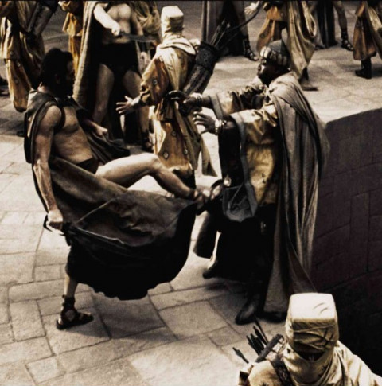
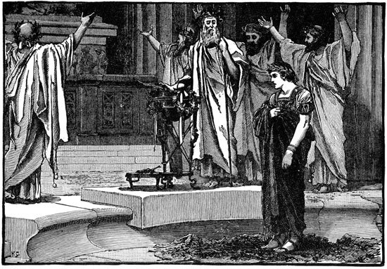
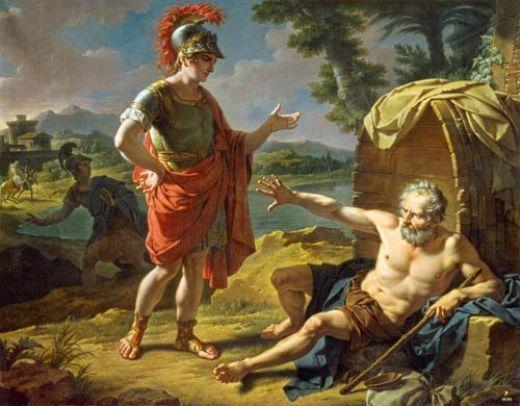
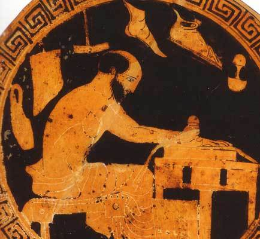
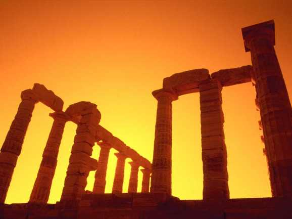

자유로운 그리스인들이 가질 만한 직업
게시: 2019-06-27T06:30:34+09:00
고대 그리스 사람들은 무척이나 자존심이 센 족속들이었습니다. 페르시아의 다리우스 대왕이 사자들을 보내어 아테네와 스파르타에게 항복을 하라고 하며 요구했던 것은 해마다 무거운 세금을 바치라는 것도 아니었고, 그저 페르시아의 종주권을 인정한다는 뜻으로 각 도시의 '흙과 물'을 바치라는 것 뿐이었습니다. 당시 세계의 대제국이었던 페르시아의 관점에서 보면, 그리스는 정말 듣보잡 동네로서, 실제로도 워낙 가난하여 뭐 갖다 바칠 것도 마땅치 않았습니다. 그런데도 돌아온 대답은 영화에서 보셨다시피 발길질과 함께 한 'This is Sparta !'라는 괴성 뿐이었지요. (실제로는 흙과 물이라면 거기서 실컷 찾으라는 말과 함께 우물 속에 처박았다고 합니다.)

(실제로는 스파르타에는 저렇게 깔끔하게 돌로 포장된 마당도 없었습니다. 이유는 아래에서 설명드리는 바와 같이, 석수나 목수 같은 직업을 가진 시민이 전혀 없었기 때문이라고 합니다. 어떤 스파르타 왕은 다른 도시를 방문했다가 그 집 대들보가 깔끔한 사각 기둥으로 대패질이 된 것을 보고 '이 나라에서는 나무가 사각형으로 자라오 ?'라고 물었다고 합니다.) 알렉산드로스 대왕이 페르시아를 정복한 이후, 그리스와 페르시아를 하나로 통일한다는 원대한 비전으로 헬레니즘 시대를 열면서 페르시아의 인재 및 그 문화도 많이 채택하게 됩니다. 그에 대해서 알렉산드로스를 따랐던 많은 장병들은 극도의 혐오와 분노를 표출하게 되는데, 그 중에서도 가장 거부감을 샀던 것은 왕, 즉 알렉산드로스에게 무릎꿇고 엎드려 절하도록 한 예법이었습니다. 왕도 인간인데 신도 아닌 인간에게 어찌 같은 인간이 엎드려 절을 해야 한단 말인가 하는 것이 그들의 주장이었습니다. 사실 알렉산드로스는 그와 같이 엎드려 절하는 예법을 통해 은근슬쩍 자신이 신으로써 떠받들여지기를 기대했다고 합니다만, 어쨌거나 이 일화 또한 그리스인들의 강한 자존심을 보여주는 이야기입니다.

(알렉산더는 자신을 신격화하기 위해 이집트의 암몬 신전을 방문하여 자신이 마케도니아 필립 왕의 아들이 아니라 사실은 암몬 신의 아들이라는 신탁을 받아내는 등 별의별 쇼를 다했습니다.) 그리스의 사회 체제가 정말 자유로운 민주주의였는가에 대해서는 매우 부정적인 의견이 대다수입니다만, 적어도 시민권을 가진 자유인 계급에서는 부귀영화보다도 자유가 더 소중한 것으로 받아들여졌다는 것은 확실해 보입니다. 알렉산드로스 대왕이 '니가 바라는 소원이 있다면 다 말해보라'라고 하자, 자신의 거처인 통 앞에서 앉은 채로 '당신이 햇빛을 가리고 있으니 좀 비켜주시오'라고 말했다는 디오게네스의 일화를 이를 상징적으로 말해줍니다.

(알렉산드로스 대왕과 디오게네스의 일화입니다.)
그렇다고 그리스인들이 방종한 자유주의자였느냐 하면 그렇지도 않았습니다. 자유로운 분위기라고 하는 아테네조차도 상당히 군국주의적인 색체를 띤 전체주의 국가였고, 종교의 자유도 없었습니다. (소크라테스가 사형을 당한 이유가 종교적인 이유였습니다.) 도시 국가의 법이 그렇게 전체주의적인 성향을 띠었고, 그리스에는 왕이 없는 대신 법이라는 더 높은 존재가 시민들의 자유를 구속했습니다. 그렇지만 사람은 법에 의한 속박 이외에도, 절대적인 자유를 누릴 수는 없는 존재입니다. 저만 하더라도, 아침마다 일어나서 '아, 회사 가기 싫다'라고 생각하지만, 그 생각을 실현할 자유가 없습니다. 대부분의 사람들은 법보다도 더 무서운 주인, 바로 돈에게 예속된 상태이기 때문에 그렇습니다. 법이야 주로 뭘 하면 안된다라는 식으로 소극적으로 우리를 통제하지만, 돈은 뭘 해놓거라 하는 식으로 매우 적극적으로 우리를 부려 먹습니다. 게다가, 범법자나 독재자는 법으로부터 자유로울 수 있지만, 그 누구도 결코 돈 문제에서는 자유로울 수가 없습니다. 디오게네스건 예수님이건 부처님이건, 심지어 곽정 곽대협조차도, 먹어야 살 수 있으니까요. 그렇다면 지독하게도 자존심 하나로 버텨온 그리스의 남자들은 어떤 직업을 가졌을까요 ? 자존심이 밥을 먹여주는 것은 아니었기 때문에, 그들도 뭔가 직업을 가지기는 가져야 했고, 그 직업군에 있어서는 별로 특이할 만한 점은 없었습니다. 일반 수공업자들, 가령 대장장이나 도공, 직조공, 제화공 등이 있었고, 농부, 상인, 노점상 등 요즘과 크게 다를 것은 없었습니다. 그러나 기본적으로, 그리스인들은 누군가에게 고용되어 돈을 받고 일하는 것은 별로 좋지 않게 생각했습니다. 먹고 살기 위해서 사장님의 지시에 따라 일하고, 사장님의 비위를 맞추고, 사장님의 생각이 옳다고 박수를 쳐줘야 하는 모습은 오늘날 직장인이나 고대 그리스의 고용인이나 똑같습니다만, 아무튼 그런 모습은 결코 자유인스러운 모습이 아니라고 당시 그리스인들은 생각했습니다.
(취업이 어려운 이 시대 젊은이들에겐 꿈의 신분이지만, 알고 보면 그냥 넥타이를 맨 월급의 노예들 ?) '메리에겐 무언가 특별한 것이 있다'라는, 카메론 디아즈 주연의 로맨틱 코미디 영화가 있었습니다. 거기서 카메론 디아즈가 여자 친구들과 수다를 떨면서 자신이 생각하는 이상적인 남자의 조건을 하나하나 말하는 장면이 있었습니다. 거기서 그리스인들이 공감할 만한 이야기가 첫번째로 나옵니다. "He has to be self-employed." 즉, 누구에게 고용되지 않은, 프리랜서 또는 자영업자여야 한다는 뜻입니다.
제가 현재 몸담고 있는 IT 업계 종사자의 종착역은 흔히 반농담 반진담으로 '동네 치킨집'이라고 합니다만, 동네에서 치킨집을 운영하는 것이 저 위에서 카메론 디아즈가 말한 'self-employed'라는 조건에 부합할지는 잘 모르겠습니다. 하지만 고대 그리스인들에게는 분명히 'self-employed'로는 인정되지 않았을 것입니다. 왜냐고요 ? 소규모의 서비스업이나 소매업은 특히 그리스인들이 천하게 여기는 직업이었습니다. 물건이나 서비스를 판매하기 위해서는 당연히 손님들에게 간이라도 빼줄 것처럼 비위를 맞춰줄 수 밖에 없었기 때문에, 누구에게라도 당당할 수 있어야 하는 자유인이 가지기에는 별로 적합하지 않은 직업이라고 여겨졌던 것입니다. 그러나 아이러니컬하게도, 해외 무역업을 하는 대상인은, 사실 거래 규모만 다를 뿐인데도, 좋은 직업으로 여겨졌습니다. 심지어 아리스토텔레스 같은 대철학자가, 월급 노동자들이나 소상인들에게는 시민권을 줘서는 안된다는 주장까지 펼칠 정도였습니다. 그런 사람들은 제대로 된 자신의 정치적 신념을 가질 수도, 펼칠 수도 없기 때문이라는 것이지요. 플라톤도 비스무리한 생각을 했던 것으로 들었습니다. (솔직히 아리스토텔레스나 플라톤의 저서는 읽지 못했습니다.) 전체 시민이 자유로운 전사였던 스파르타의 경우엔 직업의 세계가 너무나도 단순했습니다. 즉, 스파르타 시민은 아예 직업을 가지는 것이 금지되었습니다. 대신 국가가 토지를 균등하게 전 시민들에게 배분하여 농노인 헬로트(helot, 스파르타에게 정복된 메세니아인들)에게 경작하도록 하여 그 소출로 먹고 살았습니다. 경제적인 문제에서 완전히 해방되어야, 아무 잡념없이 쌈박질 훈련에 전념할 수 있다는 것이 국가적 이념이었습니다. 그래서 스파르타의 아게실라우스 왕이 그리스 연합군을 통솔할 때, 연합군 병사들이 '왜 우리가 병력이 얼마 되지도 않는 스파르타인들의 명령을 들어야 하는가'라고 투덜대자, 자신있게 전체 회의를 소집하여 직업 조사를 했던 것입니다. 즉, 그는 스파르타군을 포함한 전 연합군을 모아서 앉혀 두고, '통장이는 일어나 저쪽으로 가라' '다음으로 대장장이는 일어나 저쪽으로 가라' 하는 식으로 각종 직업군을 하나하나 불러냈습니다. 이때, 끝까지 일어나지 않은 사람들, 즉 직업 군인(또는 개백수)들은 거의 대부분 스파르타 병사들이었는데, 이를 가리키며 아게실라우스 왕은 '봐라, 진짜 군인들만 남겨두니 스파르타의 병력이 가장 많지 않은가?" 라고 자랑스럽게 이야기했습니다.

(사실 이렇게 구두 만들던 직공이 맨날 군사 훈련만 받던 스파르타 병사보다 더 잘 싸울 수도 있는 건데 말이지요. 가령 한고조를 도와 항우를 무찌른 번쾌는 개백정 출신이쟎습니까 ?) 그렇다면 대체 그리스인들이 생각하는 이상적인 직업이란 무엇이었을까요 ? 바로 21세기형 녹색 성장을 이끌 차세대 산업, 바로 농업이었습니다. 그 중에서도 자급자족형 자작농을 뜻했습니다. 사실 한 가족이 갈아먹고 살 만한 적절한 규모의 농토가 있다면, 먹을 것과 입을 것을 모두 자급자족할 수 있었기 때문에, 어느 누구에게도 굽신거리거나 남의 지시에 따를 필요가 없었습니다. 물론 손에 못이 박히도록 고되게 일하기는 해야 했습니다만, 자유로운 삶에 대한 댓가기 그 정도의 노동이라면 남는 장사겠지요. 물론, 더 좋은 것은 노예를 많이 거느릴 정도로 부자라서, 굳이 자기가 일을 하지 않아도 되는 것이었습니다. 그리스의 도시 국가들은 직접 민주주의 체제였으므로, 시민들이 참여해야 하는 공무가 상당히 많았습니다. 따라서, 시민들이 생계에 얽매여 민회나 투표에 자꾸 빠지게 되면 곤란했기 때문에, 국가적으로도 이런 부유한, 사실상의 백수 계급이 많은 것이 좋았습니다. 돈으로부터 자유로우려면 어느 정도 돈을 가지고 있어야 한다는 것이 좀 아이러니하지요 ? 그래서 그리스인들은 특히 토지에 대한 소유욕이 강했습니다. 그리스인들의 재산 관념은 무척 오묘해서, 조상 대대로 물려내려온 재산(주로 토지)을 그대로 유지하는 것을 최고로 여겼습니다. 성경에 보면 종에게 돈을 맡기고 떠난 주인이 돌아와서, 돈을 땅에 묻어놓았다가 그대로 내놓은 종에게는 벌을 주고, 돈을 굴려서 불린 종에게는 상을 내리는 장면이 나옵니다만, 그리스인들은 그렇게 재산을 굴려서 돈을 불리는 것은 별로 좋지 않게 생각했습니다. 당시의 빈약한 경제 체제에서, 재산이 불어난다는 것은 누군가의 것을 결국 빼앗는 것을 뜻했거든요. 그래서 조상이 남긴 땅을 팔아먹는 것은 당연히 욕을 먹었지만, 땅을 늘리는 것도 손가락질을 받았습니다. 사실 모든 그리스인들이 그런 원칙을 잘 지켰다면 그리스의 융성함이 그대로 유지되었을까요 ? 하지만 사람 사는 사회는 어느 사회든지 잘난 사람과 못난 사람이 있기 마련이라서, 결국 많은 사람들이 조상 대대로 내려온 땅을 팔아야 했고, 그에 따라 일부 사람들이 토지를 과점하게 되면서 자유롭고 긍지높은 소규모 자작농들로 이루어진 건강한 그리스는 무너지게 되었습니다. 영원할 것 같던 전사들의 도시국가 스파르타 역시, 그렇게 국가가 공산당 식으로 균등하게 나눠어준 토지가, 펠로폰네소스 전쟁이 가져온 변화 때문에 법률이 느슨해지면서 결국 일부 사람들에게 병합되기 시작했고, 그 결과로 전사 계급이 당장 먹고 살기 위해 이런저런 직업을 가지면서 전사 사회의 근간이 무너져 내렸기 때문에, 결국 패망하게 되었던 것입니다. 토지 균등제가 꼭 좋다는 이야기가 아닙니다. 그런 변화에 능동적으로 대처할 역량이 스파르타에는 부족했던 것이지요.

(그리스가 마케도니아나 로마에게 망한 것이 아닙니다. 언제나, 망하는 자는 내부로부터 무너지는 것입니다.)
제 블로그 읽으시는 분들은 주로 20~40대가 많은 것 같던데, 이미 직장 생활 또는 자영업 경영을 하고 계신 분들도 있겠고, 이제 머지 않아 취직이든 창업이든 뭔가 경제 생활을 시작하셔야 하는 분들도 있으실 겁니다. 여러분들은 월급 생활자와 자영업자 중 어떤 것이 더 나으신가요 ? 우리나라는 자영업자 비율이 너무 높아서 탈이라고 합니다만, 글쎄요, 온 국민이 몇몇 대기업의 종업원이 되는 것도 뭐 그리 꼭 바람직한 현상이라고 생각되지는 않습니다. 하지만 역시 저도 당장 돈의 노예인지라, 매달 꼬박꼬박 들어오는 월급이 더 좋긴 합니다. 아마 제가 그리스 시대에 뚝 떨어진다면, 저같은 사고 방식으로는 시민권 받기가 어려울 것 같습니다.